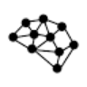
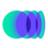
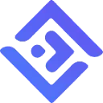

AI Helper Bot (aihelperbot.com)Анализ данных
«AI Helper Bot (aihelperbot.com)» помогает подготовить запрос к базе данных.
Раздел «Для разработчиков»: варианты ИИ для этой задачи, описания возможностей и переходы к обзорам. Сравните несколько решений на одинаковом примере.
Получите черновик функции, переводящей запись из одного формата в другой. Молекула поможет описать преобразование и исключения на Python; сравните результат с согласованной схемой, прежде чем включать функцию в рабочий процесс своего приложения.
Подготовь Python-функцию преобразования заказа из нашего JSON в заданную схему. Вот оба примера. Сохрани идентификаторы, объясни значения по умолчанию и предложи проверки для отсутствующих полей.

«AI Helper Bot (aihelperbot.com)» помогает подготовить запрос к базе данных.
«AI Website Builder 2.0» помогает собрать сайт или веб-приложение.

«CodeSquire» помогает готовить изменения программного кода.

Сравнивать «CodiumAI» с другими инструментами раздела «Разработка» удобнее на одинаковом исходном материале.
«CopilotChat» помогает готовить изменения программного кода.
«Craftman» помогает собрать сайт или веб-приложение. «Craftman» также помогает организовать разговор с чат-ботом.
Defog.ai переводит вопросы о данных в SQL и предоставляет диалоговый виджет для обращения к ним. Запросы можно формулировать на разных языках. Продукт рассчитан на работу с базами и хранилищами данных, где текстовый вопрос служит входом для подготовки обращения к информации.
Сравнивать «Groq» с другими инструментами раздела «Разработка» удобнее на одинаковом исходном материале.
H2O.ai рассчитан на задачи, где нужно готовить текст по теме и требованиям к содержанию. Ещё одно направление работы: подготавливать озвучку текстового материала.
Для «Hacker AI» сначала определите свою задачу и требуемый результат. Карточка относится к направлению «Разработка».
«Hocoos AI Website Builder» помогает собрать сайт или веб-приложение.
«InferKit» готовит текстовый черновик по условиям задачи.
«Juice» представлен в разделе «Разработка». При выборе проверьте нужную операцию и условия работы с результатом.
Для «Llog» сначала определите свою задачу и требуемый результат. Карточка относится к направлению «Данные и аналитика».
«Magnet» помогает готовить изменения программного кода.
«MindsDB» представлен в разделе «Разработка». При выборе проверьте нужную операцию и условия работы с результатом.
Сравнивать «Onboard AI» с другими инструментами раздела «Разработка» удобнее на одинаковом исходном материале.
Для «Open Assistant» сначала определите свою задачу и требуемый результат. Карточка относится к направлению «Чат-боты и ассистенты».
«PostgresML» представлен в разделе «Разработка». При выборе проверьте нужную операцию и условия работы с результатом.
«PromptLeo» представлен в разделе «ИИ-ассистент». При выборе проверьте нужную операцию и условия работы с результатом.
«Pull Request Help» разбирает изменения в программном проекте.
«Quadratic Multiplayer» представлен в разделе «Разработка». При выборе проверьте нужную операцию и условия работы с результатом.
Сравнивать «Quest AI» с другими инструментами раздела «Разработка» удобнее на одинаковом исходном материале.

Qwen Chat позволяет обсуждать задачи и готовить тексты с моделями Qwen. Веб-чат, отдельное API и локальный запуск имеют разные условия и возможности доступа.
Для «RunComfy» сначала определите свою задачу и требуемый результат. Карточка относится к направлению «Разработка».
Сравнивать «SheetAI» с другими инструментами раздела «Продуктивность» удобнее на одинаковом исходном материале.
Для «Shuffle» сначала определите свою задачу и требуемый результат. Карточка относится к направлению «Дизайн».
Сравнивать «uKit AI» с другими инструментами раздела «Разработка» удобнее на одинаковом исходном материале.
«Наносемантика» помогает организовать разговор с чат-ботом.

10Web соединяет создание сайта на WordPress с его дальнейшим размещением и настройкой. Описание проекта используется для подготовки основы, которую затем нужно наполнить и проверить.
«AI Code Reviewer» разбирает изменения в программном проекте.
«AppsMakerStore» представлен в разделе «No-code и Low-code платформы». При выборе проверьте нужную операцию и условия работы с результатом.

ChatGPT помогает писать и редактировать тексты, разбирать документы и таблицы, обсуждать код. Поиск, анализ данных и работа с изображениями дополняют чат, когда доступны в выбранном аккаунте.
«Cron AI» представлен в разделе «Разработка». При выборе проверьте нужную операцию и условия работы с результатом.
Для «Fliplet» сначала определите свою задачу и требуемый результат. Карточка относится к направлению «Разработка».
Google Search Labs предоставляет пространство для знакомства с экспериментальными поисковыми возможностями ИИ. Пользователь может пробовать варианты работы и возвращаться к ним в ходе тестирования. Платформа ориентирована на изучение новых сценариев поиска, включая задачи исследователей и разработчиков, интересующихся применением искусственного интеллекта.
«IconikAI» готовит варианты значков для приложения.

Inworld AI помогает разработчикам создавать ИИ-персонажей для приложений, игр и виртуальных пространств. Настройка охватывает знания, память и поведение в повествовании, а также разные формы взаимодействия. Инструменты предназначены для встраивания персонажа в проект, где его ответы должны учитывать заданный характер и контекст.
Jadve объединяет несколько текстовых моделей в русскоязычной ИИ-платформе. Доступны генерация текста, изображений и видео, библиотека запросов и помощники. Доступ предусмотрен через веб-интерфейс, Telegram, браузерные средства и Android, поэтому разные способы обращения сочетаются с несколькими направлениями подготовки контента в одном продукте.
Для «JSON To ChatGPT» сначала определите свою задачу и требуемый результат. Карточка относится к направлению «Разработка».
LeinGPT объединяет текстовые модели и генерацию визуальных материалов в одном интерфейсе. Также доступны музыка и озвучивание. Российский агрегатор работает через веб и Telegram, а расчёты в рублях дополняют использование разных ИИ-инструментов при подготовке выбранного пользователем текстового или медиаматериала.
miniapps AI позволяет создавать и использовать ИИ-приложения без написания кода. Сервис поддерживает генерация текста, чат-боты и настройка под разные задачи. Платформа также предусматривает обмен приложениями, объединяя подготовку собственного варианта инструмента с возможностью передать его другим пользователям для дальнейшего использования.
Page Assist for Ollama добавляет к Chrome интерфейс работы с локальными моделями ИИ. Расширение использует боковую панель, чтобы обращаться к модели во время просмотра страницы. В описании также указана поддержка моделей с визуальными возможностями для работы с соответствующим материалом браузера.
«PDF AI (pdf.ai)» разбирает содержимое документов.
«Pinokio» представлен в разделе «Разработка». При выборе проверьте нужную операцию и условия работы с результатом.
«Rumi» представлен в разделе «Конструкторы сайтов и лендингов». При выборе проверьте нужную операцию и условия работы с результатом.
Для «Skyworker» сначала определите свою задачу и требуемый результат. Карточка относится к направлению «Бизнес».
Сравнивать «Translation Strings» с другими инструментами раздела «Разработка» удобнее на одинаковом исходном материале.
Страница 4 из 7